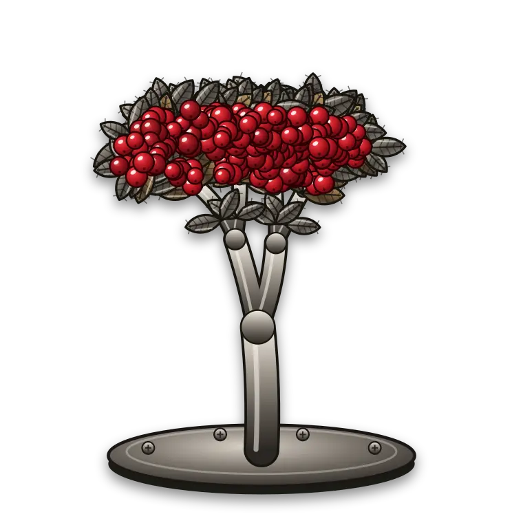
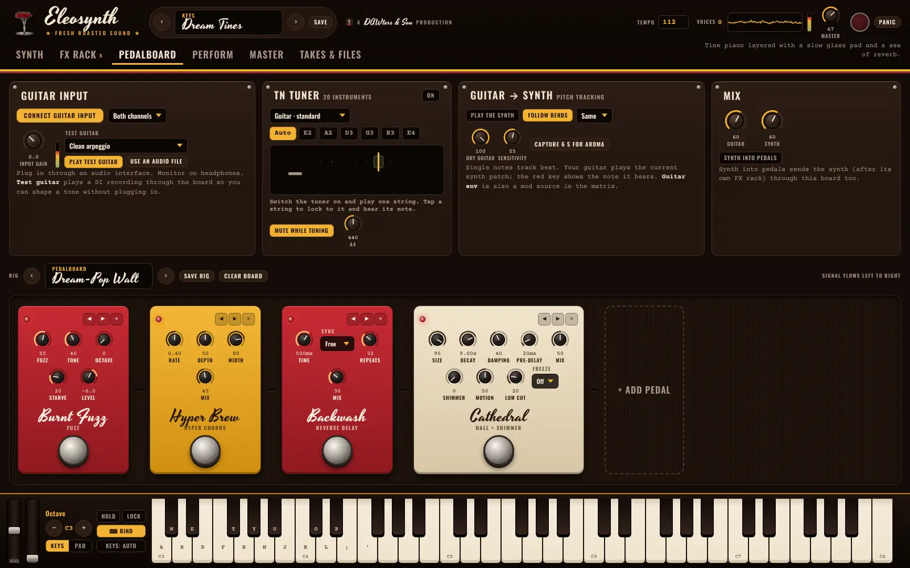

A synth and a pedalboard, poured into one.
Eleosynth is a deep synthesizer you can also plug your guitar into. Wavetables, a tine electric piano, granular textures and 39 effects on one side; a full pedalboard, a tuner and guitar-to-synth tracking on the other. No price, no sign-up, no tracking.
Mac · Windows · Ubuntu · Android · browser

Six sound sources, one voice.
Every note can stack two wavetable oscillators, a tine piano, a granular layer, a sub and noise, then run them through a filter that drifts like old hardware.
Oscillators A + BWavetables
Sixteen tables built in, from Crema Basics to Choir Haze, plus your own from any WAV. Up to eight unison voices, and warps for bend, sync, FM and fold. A 3-D view shows the frame you hear.
Electric pianoTine piano
Stage 73, Suitcase, Bright tines, Felt ballad, Reed piano and Celeste. Play harder and the pickup barks; the bell rings out on top, the damper catches the tail.
GranularAroma
Glass air, steam, rain on a tin roof, bowed steel, a choir. Or capture six seconds of your own guitar and play it back from the keys as a cloud of grains.
FilterDrifting ladder
Saturating 24 and 12 dB ladders that self-oscillate, four state-variable modes and a tuned comb. Drive, key tracking and a live response curve.
ModulationDrag to modulate
Three envelopes, two LFOs, velocity, mod wheel, random and your guitar's own envelope. Drag a source onto any knob; red rings show what's moving.
PlayArp, MIDI, keys
An arpeggiator with chord mode and swing, Web MIDI with MIDI learn on every knob, an on-screen keyboard that reads how hard you strike, and your computer keys.
Plug in. Stomp. Play the synth with your guitar.
- Any order, any pedal. Build a board from the same 39 effects the synth uses, with footswitches and fifteen ready rigs from Clean Shimmer to Dream-Pop Wall.
- Guitar → Synth. Single notes play the current sound. Bends follow, a new pick retriggers, and the red key shows what it hears.
- Tuner and looper. A tuner that mutes while you tune, and a Loop Station for layering ideas live.
- Nothing plugged in? Four test-guitar recordings run through the board so you can shape a tone first.

Built like an instrument.
39 effects. Use any of them on anything.
The same pool feeds the synth's FX rack and the pedalboard, and every sound saves its own rack.
Dynamics
- Grounds Gatenoise gate
- Squeezecompressor
- The Lidlimiter
- Snaptransient shaper
- Morning Swellvolume swell
- Percolatetempo pump
Drive
- Sugar Boostclean boost
- Crema Driveoverdrive
- Burnt Fuzzfuzz
- Roastmasteramp + 5 cabinets
- Grinderdistortion
- Bit Millbitcrusher
- Cassettelo-fi tape
- Steam Wandexciter
Pitch
- Double Shotoctaver
- Shiftpitch shifter
- Barber Polefrequency shifter
- Ring Dingring modulator
Filter & EQ
- Tone Bar4-band EQ
- Wake-Upenvelope filter
- Pour Overmotion filter
- Café Voiceformant filter
Modulation
- Steam Choruschorus
- String Caféensemble
- Hyper Brewhyper chorus
- Swirlphaser
- Jet Flangerflanger
- Lamp Vibephotocell vibe
- Drip Tremtremolo
- Suitcase Panauto-pan
- Spin Cabinetrotary speaker
- Wide Mugstereo width
Time & space
- Tape Echodelay
- Backwashreverse delay
- Cathedralhall, shimmer, freeze
- Steel Plateplate reverb
- Spring Tankspring reverb
- Aroma Cloudgranular texture
- Loop Stationlooper
Free on every screen you own.
Version . Every package is built from the same source, in the open.
The installers aren't signed with paid certificates yet, so your computer may ask you to confirm the first time; each card shows how. For live guitar input use a desktop app, the Android app, or the web version through its local launcher.
Three free studios, one family.
Make the beat in Esperanza's Drum Kit, find the sound in Eleosynth, record and master it in DAWters and Son. Same promise across all three: free, open source, no tracking.
DAWters & Son
The multitrack studio: unlimited tracks, a console with a knob for every job, mastering recipes and a tuner.
Meet DAWters & SonEsperanza's Drum Kit
A pattern-based beat studio with a channel rack, song sections, 808s and a Feel dial that makes beats play like a person.
Meet Esperanza's Drum KitEleosynth
You're here: the synthesizer and pedalboard. Its sounds and takes save as plain WAV and JSON, ready to drop into the others.
Download EleosynthAn instrument, not a subscription.
Eleosynth is free software under the GNU GPL, version 3 or later. You can use it for anything, read every line, change it and share your changes.
Asked and answered.
Can I really plug my guitar in?
Yes. Use any audio interface, open the Pedalboard tab and press Connect guitar input. Pick the input channel your guitar is on, set the gain so the meter peaks in the yellow, and use headphones to avoid feedback. In the browser, run the web version through its local launcher so the browser allows the input.
Does Guitar → Synth play chords?
Not yet. It tracks single notes, follows bends and retriggers on each pick, which suits leads, bass lines and pads that bloom from one note. Polyphonic tracking is on the roadmap.
Is the electric piano sampled?
No. It's a model of a tine, a tone bar and a magnetic pickup, so every note responds to how hard you play: the bark, the bell and the decay all change with velocity. That keeps the whole app small enough to run on a phone.
Can I use my own sounds?
Yes. Import a WAV as a wavetable (one cycle, or a long file cut into up to 64 frames), load any audio file into the Aroma granular layer, or capture six seconds of your guitar and play it from the keys.
Does it work with MIDI keyboards?
Yes, in the desktop apps and in Chrome or Edge. Notes, velocity, pitch bend, the mod wheel and the sustain pedal work straight away. Right-click any knob and choose MIDI learn to put it on a controller knob.
How do I get sounds into DAWters and Son?
Press Record, play, and save the take as a 24-bit WAV, then import it into DAWters and Son or load it as a sample in Esperanza's Drum Kit.